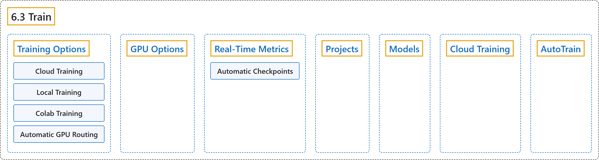

6.3 Train
Classification

Glossary
| Term | Definition | 中文翻译 | Source |
|---|---|---|---|
| 6.3 Train 训练 |
"Ultralytics Platform provides comprehensive tools for training YOLO models, from organizing experiments to running cloud training jobs with real-time metrics streaming." | Ultralytics Platform 提供训练 YOLO 模型的全套工具，从组织实验到运行带实时指标流的云端训练任务。 | Ultralytics, n.d.-c, "Model Training", para. 1 |
| Training Options 训练方式 |
(context) "Ultralytics Platform supports multiple training approaches:" | （语境）Ultralytics 平台支持多种训练方式： | Ultralytics, n.d.-c, "Training Options", para. 1 |
| Cloud Training 云端训练 |
"Train on Ultralytics Cloud GPUs" | 在 Ultralytics 云端 GPU 上训练 | Ultralytics, n.d.-c, "Training Options", table, row 1 |
| Local Training 本地训练 |
"Train locally, stream metrics to the platform" | 在本地训练，把指标推送到平台 | Ultralytics, n.d.-c, "Training Options", table, row 2 |
| Colab Training Colab 训练 |
"Use Google Colab with platform integration" | 借助平台集成使用 Google Colab | Ultralytics, n.d.-c, "Training Options", table, row 3 |
| Automatic GPU Routing GPU 自动路由 |
"When you select a GPU cheaper than the RTX PRO 6000 and Ultralytics-managed capacity is free, the Platform runs your job on an RTX PRO 6000 while still billing your selected GPU's hourly rate." | 当你选择比 RTX PRO 6000 便宜的 GPU 且 Ultralytics 管理的算力空闲时，平台会在 RTX PRO 6000 上运行你的任务，但仍按你所选 GPU 的小时费率计费。 | Ultralytics, n.d.-c, "Training Options", Automatic GPU Routing, para. 1 |
| GPU Options GPU 选项 |
(context) "Available GPUs for cloud training on Ultralytics Cloud:" | （语境）Ultralytics 云上可用于云端训练的 GPU： | Ultralytics, n.d.-c, "GPU Options", para. 1 |
| Real-Time Metrics 实时指标 |
(context) "On the model's Train tab, view live metrics and available validation results:" | （语境）在模型的 Train 标签页上查看实时指标和可用的验证结果： | Ultralytics, n.d.-c, "Real-Time Metrics", para. 1 |
| Automatic Checkpoints 自动检查点 |
"The best checkpoint (best.pt, the highest-fitness epoch) is uploaded to the Platform periodically while training runs and again when the run ends" |
最佳检查点（best.pt，即适应度最高的轮次）会在训练运行期间定期上传到平台，并在运行结束时再上传一次 |
Ultralytics, n.d.-c, "Real-Time Metrics", Automatic Checkpoints, para. 1 |
| Projects 项目 |
"Ultralytics Platform projects provide an effective solution for organizing and managing your models." | Ultralytics Platform 的项目提供一种组织和管理模型的有效方案。 | Ultralytics, n.d.-e, "Projects", para. 1 |
| Models 模型 |
"Ultralytics Platform provides comprehensive model management for training, analyzing, and deploying YOLO models." | Ultralytics Platform 提供全面的模型管理，用于训练、分析和部署 YOLO 模型。 | Ultralytics, n.d.-d, "Models", para. 1 |
| Cloud Training 云端训练 |
"Ultralytics Platform Cloud Training offers single-click training on cloud GPUs, making model training accessible without complex setup." | Ultralytics Platform 的云端训练提供一键式云 GPU 训练，无需复杂配置就能训练模型。 | Ultralytics, n.d.-b, "Cloud Training", para. 1 |
| AutoTrain 自动训练 |
"AutoTrain uses Ask AI to help you train, compare, and improve models through a conversation." | AutoTrain 借助 Ask AI，通过对话帮你训练、比较和改进模型。 | Ultralytics, n.d.-a, "AutoTrain with Ask AI", para. 1 |
References
Ultralytics. (n.d.-a). AutoTrain with Ask AI. Ultralytics YOLO Docs (ultralytics 8.4.194). Retrieved October 31, 2026, from https://docs.ultralytics.com/platform/train/autotrain/
Ultralytics. (n.d.-b). Cloud Training. Ultralytics YOLO Docs (ultralytics 8.4.194). Retrieved October 31, 2026, from https://docs.ultralytics.com/platform/train/cloud-training/
Ultralytics. (n.d.-c). Model Training. Ultralytics YOLO Docs (ultralytics 8.4.194). Retrieved October 31, 2026, from https://docs.ultralytics.com/platform/train/
Ultralytics. (n.d.-d). Models. Ultralytics YOLO Docs (ultralytics 8.4.194). Retrieved October 31, 2026, from https://docs.ultralytics.com/platform/train/models/
Ultralytics. (n.d.-e). Projects. Ultralytics YOLO Docs (ultralytics 8.4.194). Retrieved October 31, 2026, from https://docs.ultralytics.com/platform/train/projects/